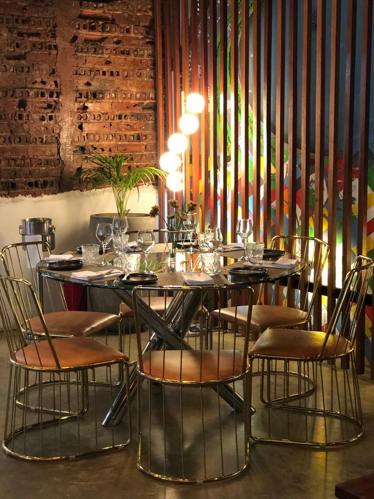
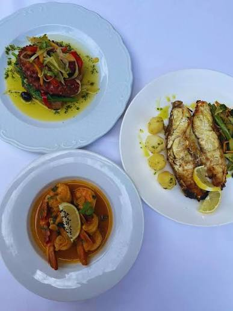
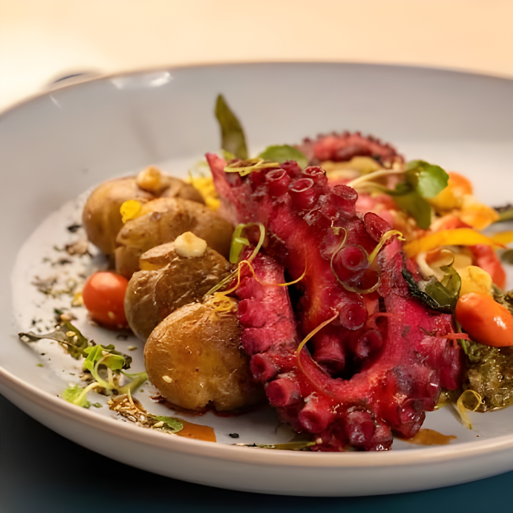
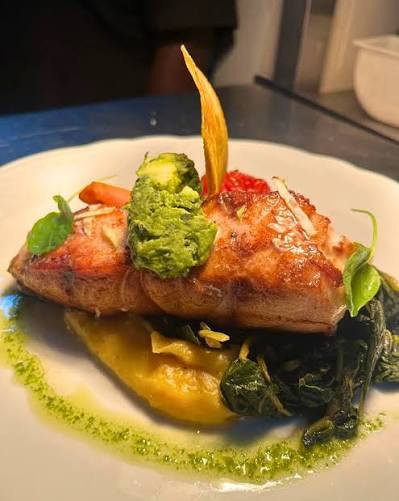

Um lugar para ficar
Um pátio com tempo para tudo.
A nossa história
Luanda à mesa.
10 anos de história de um projecto criado para suprir as necessidades de serviços diversificados na zona sul de Luanda.
Complexo hoteleiro com multi-serviços compostos por: petiscaria, cafe, restaurante, showroom, salão de eventos, espaço de recreio infantil e guesthouse, salas de formação, com estacionamento privado localizado no Morro Bento.

O ambiente


